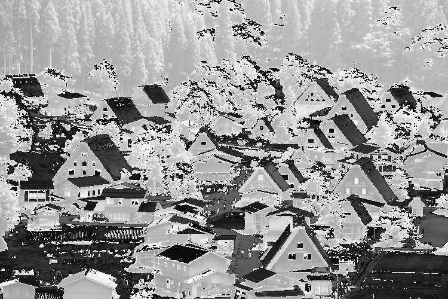

By Paul Joy
Use fopen, fread, fwrite, fclose functions in C/C++ library to input a raw image (binary data) into your image memory (2D array).
Change each pixel value by
(1) reversing it,
(2) add 20,
and (3) add 128.
Using the following code:
View